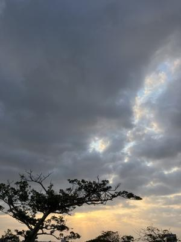
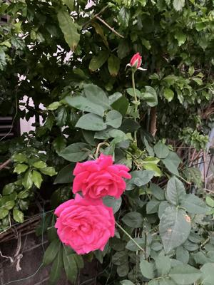
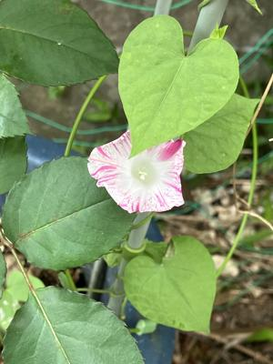

うるがいの話 ある日
最新: ものもうす社員【うるがいの話 ある日】とは 一日だけのプログです
『うるがいの話』の最新一日だけのプログで、通信料が少なく経済的だ。カニの画像をクリックすると全ての日付が載る『うるがいの話』サイトを表示します
|
|
【うるがいの話】 うるがい(ｳﾙｶﾞｲ urugai)とは、『もずくがに』の名前でとても大きくなります。 |
|---|---|
|
|
【カミマヤーの話】 猫のことを方言でマヤーといいます。カミマヤー（kamimayaa）とは、神の猫のことです。 |
|
【たながぁの音楽】 たながぁ（ﾀﾅｶﾞｰ tanagaa）とは手長えびのことで、何種類かあり大きいのは車 エビぐらいになります。 |

|
【ぶながぁの話】 ぶながぁ(ﾌﾞﾅｶﾞｰ bunagaa)とは、赤い髪の毛、赤い身体、そして身長は１ｍ２０ｃｍ ぐらい、川の蟹を食べているの目撃された。場所は沖縄県国頭郡大宜味村のと ある村僕の隣近所に住んでいる爺さんから、聞いた話です。 |
|
|
【ギーマの話】 ギーマ(giima)とは、山原の里山に咲くスズランに似た、 花を付けます。実は食べられます、 気が付くと口の周りが紫になっています。 |
2024年03月14日 (木）ものもうす社員
20:47
 
オカさん（社長）へ
要望事項です
【ｅ講義動画】（２時間）技術文書をもっとわかりやすく書く』の紙教材電
子教材が欲しい。教材を『座右の本』としたく、かつての研修企業の社員（
役員をしていた）へのお願いです。
【集合】技術文書をもっとわかりやすく書く～誤解されない文書を書くテク
ニック～（一日）では、電子教材が提供されています。
プログラムは作れても、文書（仕様書、障害表や仕様変更書など）が書けな
い技術者が大勢います。
一緒に研修を受けている社員にも、同意見があるかもとＤＭ（オカさんとの
一対一のやり取り）にしませんでした。
わがままを言えば、還暦を過ぎた老人は紙教材！が欲しい。
特許部へ特許出願【名称：データ標本作成システム】経験のあるウルガイ（
私）さんより

火曜日に、ＳＬＡＣＫに書き込んだ。関係者が動いたようで、今日期待して
いた電子教材が配布された。紙教材（製本）は、マ我慢するか。
２０時４０分 ビットコインの総資産 ￥３１、２３９（↓１９９）